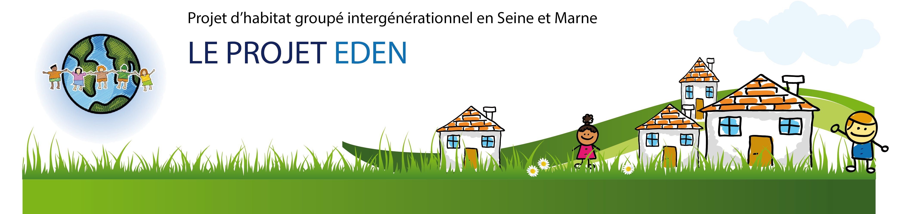

- des femmes, des hommes, en couple ou non, autonomes, avec ou sans enfants, tous âges confondus - des personnes responsables et soucieuses : * du développement durable * de l'entraide intergénérationnelle * du bien-être des enfants - recherchant une alternative au logement individuel - souhaitant participer à un projet collectif ouvert sur l'extérieur.
- Nous sommes un collectif d'une petite dizaine de foyers : nous cherchons à compléter le collectif - Les membres du collectif -- sont adhérents de l'association "Soyons Solidaires Soyons Eden" : Statuts de l'association EDEN -- ont rédigé leur charte et un document sur "les usages" du collectif : La charte d'EDEN et Les usages du collectif EDEN. - Depuis le début du projet, nous avons été en contact avec plusieurs cabinets d'architectes. Deux d'entr'eux ont travaillé avec le collectif. Un sur le projet architectural possible sur un terrain, l'autre sur un projet de rénovation d'une maison. Des plans de masse et une technique de construction ont été proposés. Tous ces éléments pourront enrichir nos reflexions sur le nouveau lieu. Si nos moyens financiers nous le permettent, nous nous orienterons vers de la maison passive. - Un bailleur social est partenaire du projet : quelques logements sont ouverts en locatif social. - Nous prévoyons la création d'espaces mutualisés entre habitants : (buanderie, atelier bricolage, petit espace calme). Les espaces d'activités économiques, culturelles et associatifs seront ouverts au collectif. - Pour la partie activités économiques, nous nous orientons vers un espace associatif comprenant un café associatif et culturelle, une cuisine, une épicerie de proximité, une grande salle pouvant accueillir projections, ateliers, spectacles, repas, stages, destinés aux habitants du lieu, de la commune et des environs. La partie micro-crèche est en suspens et dépendra de sa faisabilité économique et de l'étude de besoin. - La fabrique à Initiatives soutient le projet, nous suit et nous conseille dans l'avancée du projet. - Le projet est soutenu par : * le Conseil Général du 77 depuis décembre 2013, * la Fondation de France depuis juin 2014 * la Région Ile de France depuis décembre 2014 * la Réserve de la Biosphère Fontainebleau-Gâtinais * et d'autres fondations sont susceptibles d'apporter un soutien au projet. - Le projet a reçu : * le label "projet du territoire" en avril 2014 par le CG77, * le Trophée de la Réserve de la Biosphère en juin 2015. - Les réunions collectives se poursuivent et permettent aux futurs habitants d'avoir une réfléxion collective et de prendre des décisions. Le projet avance ... (pour en savoir plus : Synthèse de l'état d'avancement du projet EDEN 01032015) Alors si ce projet vous intéresse, si vous souhaitez en savoir plus et si vous souhaitez faire partie du collectif, n'hésitez pas à nous contacter en cliquant ici
Le collectif est constitué à ce jour d'une petite dizaine de foyers. Nous avons également, régulièrement la participation de personnes intéressées par le projet EDEN. Une famille avec 5 enfants fait partie du collectif, nous souhaitons accueillir d'autres familles avec enfants. Les différents axes de travail au cours de l'année 2014-2015 ont été les suivants : - le programme architectural, - la réflexion sur les espaces privés et collectifs, - la décision sur la structure juridique la plus appropriée, - l'élaboration du montage financier selon les capacités de chacun et les financements possibles, - la promotion et la communication du projet, - la création d'un café associatif et culturel avec mutualisation des espaces collectifs (grande salle commune, cuisine, buanderie, ...), - la mise en place d'un partenariat avec Ti-Hameau.
Titulaire d'une Maitrise de Sciences Economiques, d'un Diplôme d'Etude de Comptabilité Financière et d'un Master en management des RH et RSE, je souhaite à présent mettre mes compétences au service de l'économie sociale et solidaire. C'est ainsi que m'est venue l'idée de créer un lieu qui me permettrait à la fois de vivre et de m'épanouir professionnellement tout en mettant en avant les valeurs que je porte et qui sont le développement durable, le respect, l'écoute, l'entraide, l'épanouissement de chacun, la mutualisation des compétences, l'ouverture sur les autres et l'intérêt du collectif face à l'individualisme croissant. Mes domaines de compétences sont plus particulièrement, de par ma formation, la gestion des RH, l'administration du personnel, la paie et la comptabilité. Mais depuis que je travaille sur mon projet, j'ai été amenée à développer d'autres compétences, et en cela, je suis une fervente admiratrice des autodidactes. J'ai par ailleurs des activités bénévoles : trésorière pendant 4 ans dans un club d'athlétisme, je participe occasionnellement à l'encadrement d'un groupe d'athlètes âgés de 15 à 25 ans. Je suis membre de plusieurs associations : - engagées dans le développement durable : Batir Sain, d'Eco Habitat Groupé et de CAHP le collectif d'animation pour l'HP - et/ou qui proposent des alternatives citoyennes : Objectif Terre 77 Je travaille actuellement à SOLIDARITES INTERNATIONAL, une ONG dans l'humanitaire et parraine un enfant via l'associaiton AIDE ET ACTION. J'ai suivi des formations en rapport avec le projet (aussi bien sur la création d'une crèche que sur les éco-projets) - comment créer un éco-projet , à travers l'expérience du Hameau des Buis ? (1 jour) - comment créer une structure d'accueil petite enfance ? (2 jours) - comment créer une micro-crèche ? (1 jour) - les outils du vivre-ensemble ? (5 jours).S